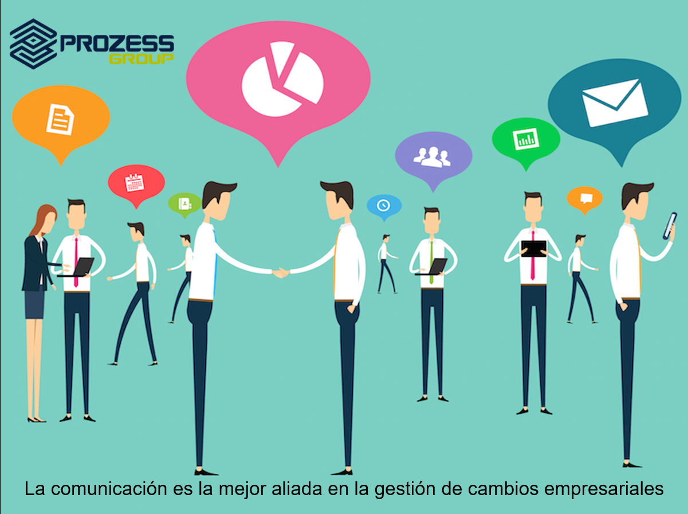

Cambios en la Comunicación
Los cambios en la comunicación se refieren a la transformación radical provocada por las tecnologías web, que han facilitado interacciones instantáneas y globales a través de plataformas como redes sociales, mensajería instantánea y videollamadas. Estas innovaciones han eliminado barreras geográficas y temporales, permitiendo una conectividad más rápida y eficiente entre personas y comunidades en todo el mundo.

Educación en Línea
La educación en línea es una modalidad de enseñanza y aprendizaje que utiliza las tecnologías web para ofrecer cursos y programas educativos a través de internet. Esta forma de educación permite a los estudiantes acceder a materiales y recursos desde cualquier lugar y en cualquier momento, brindando flexibilidad y democratizando el acceso a la educación de calidad. A través de plataformas como MOOCs, videoconferencias y aulas virtuales, la educación en línea facilita la interacción entre estudiantes y profesores, superando barreras geográficas y ofreciendo oportunidades de aprendizaje continuo.